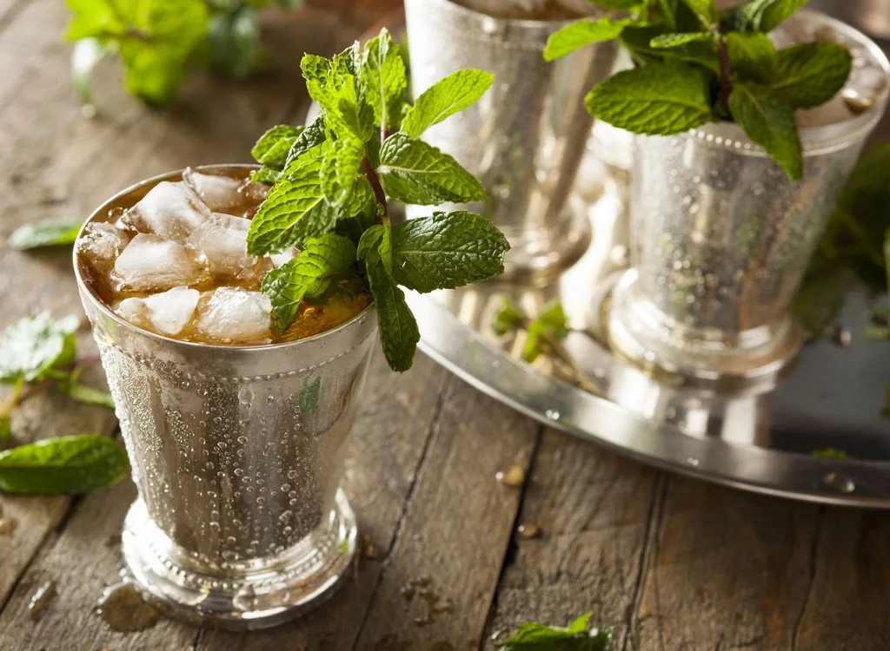

The Mint Julep

Description
The drink most associate with the Kentucky Derby. Frankly, I don't even know what a derby is. I just associate it to a good time.
Things you'll need
- 1 cup (doesn't have to be a Julep cup)
- 1 muddler (anything blunt that fits in the cup)
- 1 handful of crushed ice (optional)
Ingredients
- 4-10 mint leaves
- 0.25oz simple syrup
- 2oz bourbon
- 1 mint sprig (optional)
Steps
- Add the mint leaves and simple syrup into the cup and muddle until you smell a strong minty aroma
- Pour in the burbon
- Optionally add your crushed ice to the same cup
- Stir until the cup is frosted or cold, or your perfect temperature of lukewarm because you didn't add any ice
- Optionally garnish with the mint sprig